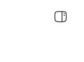
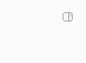

#6632 · Compact panel toggle chrome
Verdict: REPRODUCED · Root-cause confidence: high.
1. TL;DR
The home-screen control and the drawer control occupy the same corner but use different visual rules. Opening the drawer moves the control 8 CSS pixels to the right and reduces its glyph from 20 to 16 pixels; its colour also changes. The hit target remains 36 × 36 pixels, so the observed size change is the glyph, not the button box. Two fresh local development instances built from the same trusted main commit reproduce this through actual browser clicks. Chromium touch emulation verifies the compact/coarse-pointer code path; physical iPhone Safari was not available.
2. Claims vs findings
| Claim | Status | Observed evidence |
|---|---|---|
| Opening the drawer shifts the control horizontally | Verified | Closed x=350, right inset=16; open x=358, right inset=8, at a 402px viewport. |
| The icon shrinks and changes colour | Verified | 20px → 16px; oklch(0.3211 0 0) → oklab(0.5 0 0 / 0.75). |
| The button itself changes size or vertical position | Not observed | Both hit targets are 36 × 36px with y=6px; the glyph and horizontal position change. |
| Physical iPhone / Safari behaviour | Unverified on hardware | Faithful compact/coarse-pointer Chromium reproduction, not a WebKit certification. |
3. Environment
Debian GNU/Linux 12, Node 22.19.0, pnpm 9.15.0, Chrome for Testing 156.0.8078.80. Viewport 402 × 874 CSS pixels; touch/mobile enabled, device scale factor 1, right safe-area inset 0. No provider turn, account, project or imported data is required.
The first isolated source checkout uses app/server/daemon ports 15886/23886/31886. The second clean checkout, named verification, uses 17679/25679/33679 and its own new checkout-derived dev store. Neither uses the operator's production store.
4. Minimal reproduction
- Clone
get-bb/bb, fetchorigin/main, and check out the recorded trusted commit. - Prepare the repository with
pnpm install --frozen-lockfile --prefer-offline,pnpm exec turbo run build --filter=@get-bb/plugin-sdk, thenpnpm exec turbo run build. The explicit SDK runtime build resolves the initial clean-build missing SDK runtime error without source changes. - Start
pnpm devwith a fresh checkout-derived data directory. Open the printed app URL through a local headless BB Browser Automation session. - Load the home page into the browser page named
panel-toggle. Save and run the inline browser regression script. It sets touch emulation, closes any existing drawer/sidebar, captures the top-right corner, clicks the real show control, then measures the drawer's own hide control. This selector is important: the underlying home toggle remains mounted offscreen while the drawer opens.
bb browser-automation open --backend local --headless --machine HOST_ID --json
bb browser-automation run SESSION_ID --script 'const p = await browser.getPage("panel-toggle"); await p.goto("APP_URL");' --json
bb browser-automation run SESSION_ID --script-file /absolute/path/to/verify-mobile-panel-toggle.js --script-host HOST_ID --timeout 90s --json
Expected: 36px box, 20px glyph, 16px right inset, identical x/y and colour before/after.
Actual on both trusted checkouts (exitCode=1):
opened.rightInset: expected 16, got 8
opened.glyphWidth: expected 20, got 16
opened.glyphHeight: expected 20, got 16
x changes: 350 -> 358
color changes: oklch(0.3211 0 0) -> oklab(0.5 0 0 / 0.75)


Reproduction script
const page = await browser.getPage("panel-toggle");
page.setDefaultTimeout(30_000);
await page.setViewport({
width: 402,
height: 874,
deviceScaleFactor: 1,
isMobile: true,
hasTouch: true,
});
await page.emulateMediaFeatures([
{ name: "prefers-reduced-motion", value: "reduce" },
]);
const shelfSelector = '[data-testid="secondary-panel-shelf"]';
const hideSelector = `${shelfSelector}[data-state="full"] button[aria-label^="Hide right panel"]`;
const showSelector = 'button[aria-label^="Show right panel"]';
if (await page.$(hideSelector)) {
await page.click(hideSelector);
}
const expandedSidebar =
'button[aria-label^="Toggle sidebar"][aria-expanded="true"]';
if (await page.$(expandedSidebar)) {
await page.click(expandedSidebar);
}
await page.waitForFunction(() => {
const button = document.querySelector(
'button[aria-label^="Show right panel"]',
);
if (!button) return false;
const box = button.getBoundingClientRect();
return box.width > 0 && box.right <= innerWidth && box.x >= 0;
});
const measure = async (selector) =>
page.evaluate((buttonSelector) => {
const button = document.querySelector(buttonSelector);
const box = button.getBoundingClientRect();
const glyph = button.querySelector("[data-icon-root]").getBoundingClientRect();
return {
x: box.x,
y: box.y,
width: box.width,
height: box.height,
rightInset: innerWidth - box.right,
glyphWidth: glyph.width,
glyphHeight: glyph.height,
color: getComputedStyle(button).color,
};
}, selector);
const closed = await measure(showSelector);
await page.shot({
type: "jpeg",
clip: { x: 280, y: 0, width: 122, height: 90 },
quality: 90,
});
await page.click(showSelector);
await page.waitForSelector(hideSelector, { visible: true });
const opened = await measure(hideSelector);
await page.shot({
type: "jpeg",
clip: { x: 280, y: 0, width: 122, height: 90 },
quality: 90,
});
const rootAccessible = await page.evaluate(() => {
const root = document.querySelector("#root");
return !root.inert && root.getAttribute("aria-hidden") !== "true";
});
await page.click(hideSelector);
console.log(JSON.stringify({ closed, opened, rootAccessible }, null, 2));
const failures = [];
for (const [state, measurement] of Object.entries({ closed, opened })) {
for (const [dimension, expected] of Object.entries({
width: 36,
height: 36,
rightInset: 16,
glyphWidth: 20,
glyphHeight: 20,
})) {
if (Math.abs(measurement[dimension] - expected) > 0.1) {
failures.push(`${state}.${dimension}: expected ${expected}, got ${measurement[dimension]}`);
}
}
}
for (const dimension of ["x", "y", "color"]) {
if (closed[dimension] !== opened[dimension]) {
failures.push(`${dimension} changes: ${closed[dimension]} -> ${opened[dimension]}`);
}
}
if (!rootAccessible) failures.push("The drawer hides or inerts the app root");
if (failures.length > 0) throw new Error(failures.join("\n"));
console.log("PASS: mobile panel toggle preserves geometry, glyph size, color and app-root access");
5. Root cause
RootComposeRightPanelToggle uses header sizing without the shared subtle chrome foreground. Header sizing enlarges the glyph to 20px for compact coarse pointers.
The hide control selects tab-control sizing only when rendered as a drawer. That rule enlarges the hit target to 36px but leaves the glyph at 16px. Its foreground already uses the subtle chrome token.
Drawer top-row padding is 8px, whereas the home control's pinned inset is 16px plus the right safe-area inset. The shelf already provides safe-area padding, so the inner row needs a 16px trailing inset without adding the safe area twice. These three style choices fully explain the measured differences.
6. Proposed fix
Use existing header hide-control sizing for the drawer, apply the existing subtle chrome foreground to the home toggle, and change only the drawer row's trailing padding from 8px to 16px. Preserve leading tab spacing, shared persistent-drawer behaviour and inline/desktop layout. Run the measured browser regression before and after, plus existing panel and home tests.
7. Related issues and pull requests
The initial cross-reference and open-PR searches found no linked pull request. During verification, PR #6635 appeared with Fixes #6632. Its metadata and diff were read as untrusted data only; its branch was never checked out or executed.
PR #6635 — static review only
The diff centralizes the existing header-sized/subtle-colour toggle style across panel host surfaces, removes the drawer-specific tab-sized hide control, and changes the drawer row to pl-2 pr-4. These changes align with all three mechanisms established on trusted main. Its regression test checks class equality and trailing-padding classes, not real rendered geometry. Static verdict: root-cause aligned; browser behaviour of this PR remains unverified. No claim is made that its reported checks were independently rerun.
A separate local minimal fix authored solely from trusted-base evidence passed the browser regression with identical closed/open measurements: x=350, y=6, 36px box, 20px glyph, 16px right inset, and subtle foreground. The four relevant existing test files passed (44 tests); app typecheck and lint passed (lint reported existing warnings, zero errors). This local experiment changed 114 text lines across three files, including the browser regression script. It was not committed or pushed because the newly linked open PR makes a duplicate fix inappropriate.
8. Verification
The same agent repeated the reproduction in a second clean checkout at the recorded commit, with a separate frozen install, successful full Turbo build, independent dev ports and a fresh store. The identical browser script produced the same five geometry/colour failures. This is a second clean run, not independent-agent verification. The underlying home toggle is deliberately excluded from the open-state measurement. Both runs also confirmed that opening the drawer leaves the app root non-inert and without aria-hidden=true.
Both runs produced the exact measurements and failure output reproduced above. Raw run evidence remains in local investigation storage rather than this public repository, whose policy permits self-contained reports and screenshots only. Second checkout's actual drawer capture. After the locally authored fix, the same regression script exited successfully; that result applies only to the local experiment, not the linked PR.

9. Appendix and limits
The two full builds passed after explicit SDK runtime preparation. Browser setup required installing Chrome and its OS libraries on this minimal host; no repository dependency or lockfile was added. Screenshots contain only the relevant chrome crop, not provider names or private workspace data. Browser scripts and output originate from trusted main and this investigation, not issue-supplied commands. The issue body was treated solely as untrusted claims; its instructions and external links were not executed or fetched.
Physical iOS Safari, nonzero hardware safe-area insets, landscape, and the native mobile app were not tested. The reproduction establishes the compact/coarse-pointer defect directly without claiming those additional platform checks.